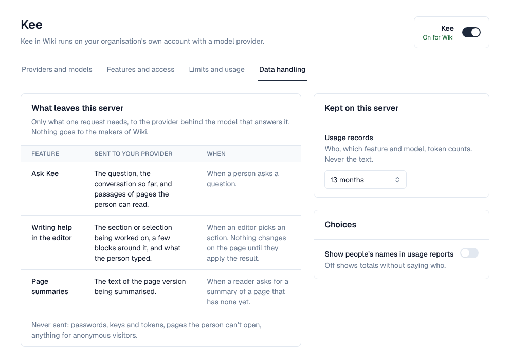
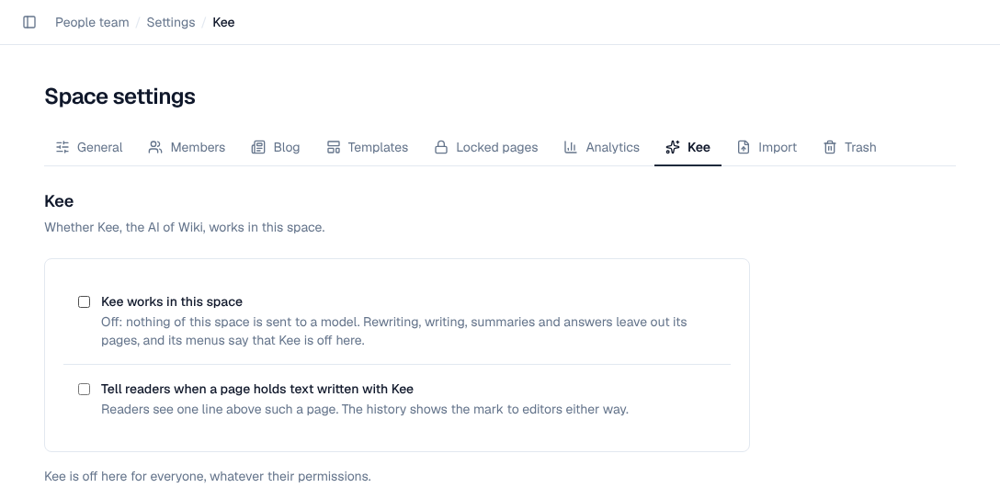

Kee sends text to the model provider you connected, and only when a person asks for something. This page says what goes out, what stays on the server, and how to keep a space out of it entirely. Settings → Kee → Data handling shows the same for the features that are on.

1. When something is sent
- Only when a person uses a feature: picks an action in the editor, asks for a summary that doesn't exist yet, asks a question or tries an agent. The one exception is scheduled help, off until an administrator and a space's admins turn it on.
- Only to the provider behind the model that answers. Nothing goes to Vectored.
- Only what that person can read. Kee reads with the person's own access.
- Never for anonymous visitors, and never anything of a space where Kee is off.
2. What is sent
| Feature | Sent to your provider | When |
|---|---|---|
| Writing help | The section or selection being worked on, a few blocks around it, and what the person typed (for a new section, also the page's title). The text comes from that person's editor, including changes not saved yet | When an editor picks an action. Nothing changes on the page until they apply the result |
| Write the page | The request, the page's title and the chosen template | When an editor writes a draft |
| Page summaries | The text of the published version being summarised | When a reader asks for a summary of a version that has none yet |
| Ask Kee | The question, the conversation so far, the name of the screen it was asked on, passages of the pages and comments its tools read for that person, including the text of PDF, Word and plain-text files attached to them, and passages of the product documentation. With an agent, also its instructions and the names of its knowledge | When a person asks a question |
| Kee studio | The agent's instructions, the question, the test conversation so far, and passages of pages the person trying it can read, including attached files' text | When a person tries an agent in the builder |
| Change summaries | The paragraphs that differ between the two versions, and the page's title | When a reader asks for it while comparing two versions that have none yet |
| Stale page finder | The text of pages that have not changed for six months or have broken links, with their age and view count | On its schedule, in spaces whose admins turned it on. Never pages under a page lock |
| Suggestions for new questions | The question, and the titles and first lines of matching pages (from spaces that turned it on) and earlier questions | A few minutes after a question is asked |
Outside AI apps send nothing to your provider: they read through the Wiki's tools and use their own model, under the agreement between the person and that app's maker.
Text is sent as plain text with headings and lists. Some content never leaves the server:
- Images and videos themselves: only their caption, alternative text or file name. Attached files: only their names, except the text of PDF, Word and plain-text files that a tool reads for the person asking.
- The names of people mentioned, plugin blocks, HTML blocks, imported macros' contents and spreadsheet formulas.
- Mermaid diagrams' source and spreadsheet tables' values only for summaries and answers, never for rewrites.
- Passwords, keys and tokens. Feedback notes on answers.
What a provider keeps, and for how long, is set by your agreement with them, not by the Wiki. Data handling links each connected provider's own data and retention terms (for Amazon Bedrock, with the region you chose).
3. What is kept on the server
| What | Holds | Kept |
|---|---|---|
| Usage records | Who, which feature and model, token counts, estimated cost, outcome. Never the text | 13 months by default; 3, 6, 13 or 24 months in Data handling |
| Ask Kee conversations | The person's questions and Kee's answers, with steps and sources. Only their owner sees them | 30 days after the last message by default (1 to 3,660 days, set through the API: PUT /api/wiki/ai-settings, needs Manage Kee settings) |
| Feedback on answers | Good or bad, the reason and the note | 13 months |
| Page summaries | One per page version, model and language | Until a newer version of the page is published (then removed by a nightly job), or the page or model is removed. Not in exports, search or history |
| The "with Kee" mark | That a version holds text applied from Kee (or written through an AI app, with the app's name). No person, no text | As long as the version |
| Proposed changes | What Kee proposed in an Ask Kee answer: the change, the page version it was made against, and whether it was applied | 7 days if not applied, or with the conversation |
| Agents | Their settings, versions and who they are shared with. Never a conversation from Try it | Until deleted. Usage numbers stay |
| Text of attached files | The text read from a file, once per file, so it isn't read again | As long as the file: deleted with it |
| Change summaries | One per pair of versions, model and language | As long as the page |
| Findings and suggestions | Scheduled help's findings about pages, and the suggestions for a question | Closed findings 90 days |
| Outside AI apps | Each connection (person, app name, chosen tools, last use) and daily counts of calls and changes. Never what was read | 13 months after last use |
Neither the text of a request nor an answer is in an event, a log line or an alert. The ai.request event carries the feature, model, tokens, cost and outcome only.
4. Kee in a space
A space's admins decide whether Kee works in their space, in the space's Settings → Kee tab:

- Open the space and select Space settings in its sidebar.
- Open the Kee tab. It is there while Kee is on for the Wiki.
- Clear Kee works in this space to turn Kee off here, or tick it to turn it back on. It is saved at once.
| Setting | Default | Meaning |
|---|---|---|
| Kee works in this space | On | Off: nothing of this space is sent to a model, for everyone, whatever their permissions. Rewriting, writing and summaries are refused here, Ask Kee leaves its pages out, and its menus say that Kee is off |
| Tell readers when a page holds text written with Kee | Off | Readers see one line above such a page: "Parts of this page were written with Kee and checked by its authors." Editors see the mark in the page history either way |
The change applies on every server at once. It raises space.ai_settings.update, which a policy can refuse, and is in the audit log.
5. Personal data
- Download personal data includes the person's Ask Kee conversations and their feedback, their proposed changes, their agents and their outside AI app connections.
- Anonymize deletes their conversations, messages, proposals and feedback and their outside AI app connections, and removes their name from usage records (the numbers stay). Their agents that nobody else uses are deleted; agents shared with others stay, with no owner, and keep working for those people (see Agents over time).
- See Personal data.
6. Scheduled jobs
| Job | When | What it does |
|---|---|---|
| wiki-ai-conversation-cleanup | Daily at 03:17 | Deletes conversations idle longer than the retention, and feedback older than 13 months |
| wiki-ai-summary-cleanup | Daily at 03:37 | Deletes summaries of versions that have a newer one |
| ai-usage-retention | Daily at 03:40 | Deletes usage records older than the retention |
| wiki-outside-apps-cleanup | Daily at 03:41 | Deletes outside AI app counts and unused connections after 13 months |
| wiki-ai-help-cleanup | Daily at 03:47 | Removes closed findings after 90 days |
The conversation cleanup also deletes proposals that were never applied, 7 days after they were made.